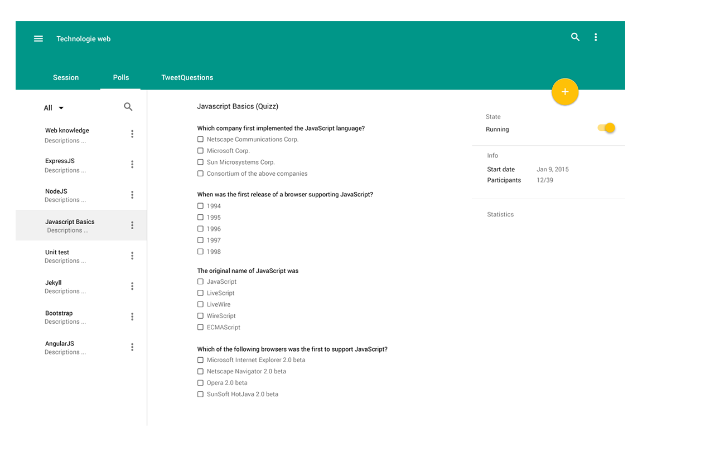
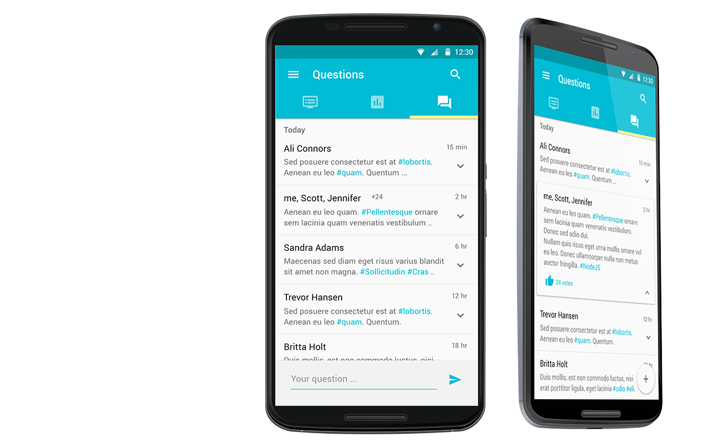

<!--
@license
Copyright (c) 2015 The Polymer Project Authors. All rights reserved.
This code may only be used under the BSD style license found at http://polymer.github.io/LICENSE.txt
The complete set of authors may be found at http://polymer.github.io/AUTHORS.txt
The complete set of contributors may be found at http://polymer.github.io/CONTRIBUTORS.txt
Code distributed by Google as part of the polymer project is also
subject to an additional IP rights grant found at http://polymer.github.io/PATENTS.txt
-->

<link rel="import" href="../../../bower_components/polymer/polymer.html">

<dom-module id="home-page">
  <template>
    <style>
      :host {
        display: block;
      }
    </style>
      <div class="layout vertical">


          <section id="page-header" class="page-header layout vertical flex">
              <app-header></app-header>
          </section>

          <section class="full layout horizontal flex">
              <div class="flex-6 padding">
                  <div class="content">
                      <h2>L'outil <span class="highlight">parfait</span> <br>
                          du conférencier</h2>

                      <p class="desc">Polliwog est une application web permettant de créer des questionnaires, sondages
                          et ou quizz. Les resultats sont visible en temps réel et les utilisateurs peuvent participer
                          depuis leur ordinateurs, tablettes ou smartphones.</p>

                      <h3>
                          <iron-icon icon="favorite"></iron-icon>
                          Pourquoi faire compliquer ?
                      </h3>
                      <p class="bullet">Pour commencer il suffit de créer un compte, puis une session public. Votre auditoire pourra se connecter à cette session via son lien URL
                      .. Et vous déjà prêt à partager vos questionnaires!
                      </p>

                      <h3>
                          <iron-icon icon="favorite"></iron-icon>
                          Compatible sur toutes les types d'appareils.
                      </h3>
                      <p class="bullet">L'application est optimisée pour les écrans de toutes tailles. Vous pouvez commmencer vos questionnaires
                      avec votre smartphone puis les finir avec votre tablette ou ordinateur.</p>
                  </div>
              </div>
              <div class="flex-6 no-padding">
                  <div class="image-container right">
                      
                  </div>
              </div>
          </section>


          <section class="full layout horizontal flex">
              <div class="flex-6 no-padding">
                  <div class="image-container left">
                      
                  </div>
              </div>
              <div class="flex-6 padding">
                  <div class="content">

                      <h2><span class="highlight">Questions</span> de l'auditoire</h2>

                      <p class="desc">Il se peut qu'une présentation soulève beaucoup de questions ou qu'un professeur
                          souhaite savoir à quoi s'attend son auditoire avant de donner son cours. Une manière de trouver
                          une solution à ces problèmes est la fonctionnalité TweetQuestions.</p>

                      <h3>
                          <iron-icon icon="communication:chat"></iron-icon>
                          Les utilisateurs écrivent des questions contenant des #Hashtags
                      </h3>
                      <p class="bullet">Ainsi, il est plus facile de faire des recherches de questions ou de connaître les sujets les plus populaires</p>

                      <h3>
                          <iron-icon icon="icons:perm-identity"></iron-icon>
                          Les utilisateurs peuvent rester anonyme.
                      </h3>
                      <p class="bullet">Même si tout le monde sait "qu'il n'y pas de questions bête.."
                          votre auditoire sera tout de même plus à l'aise de poser toutes leurs questions.</p>
                  </div>
              </div>
          </section>

          <section class="full layout vertical center-justified">
              <div class="layout horizontal">
                  <div class="flex"></div>
                  <div class="flex-6 head center">
                      <h2>Et bien <span class="highlight">plus</span> encore..</h2>
                  </div>
                  <div class="flex"></div>
              </div>

              <iron-media-query query="(max-width: 650px)" query-matches="{{tablette}}"></iron-media-query>

              <template is="dom-if" if="{{!tablette}}">
                  <div class="layout horizontal flex center-justified">
                      <icon-box icon="editor:attach-file" title="Partage de fichiers" content="Partagez vos présentations, liens urls, images, etc.. avec votre votre auditoire."></icon-box>
                      <icon-box icon="icons:lock" title="Session privées" content="En créant des sessions privées vous pourrez séléctionner les personnes autorisée à se connecter à la session."></icon-box>
                      <icon-box icon="social:poll" title="Statistiques" content="Les résultats de vos questionnaires ou sondage sont illustré par des graphiques."></icon-box>
                  </div>
              </template>

              <template is="dom-if" if="{{tablette}}">
                  <div class="layout vertical flex center-justified">
                      <icon-box icon="editor:attach-file" title="Partage de fichiers" content="Partagez vos présentations, liens urls, images, etc.. avec votre votre auditoire."></icon-box>
                      <icon-box icon="icons:lock" title="Session privées" content="En créant des sessions privées vous pourrez séléctionner les personnes autorisée à se connecter à la session."></icon-box>
                      <icon-box icon="social:poll" title="Statistiques" content="Les résultats de vos questionnaires ou sondage sont illustré par des graphiques."></icon-box>
                  </div>
              </template>

          </section>

          <section id="tour" class="full layout vertical center-justified">

              <div class="layout horizontal">
                  <div class="flex"></div>
                  <div class="flex-6 head center">
                      <h2>Un petit aperçu</h2>

                      <p class="desc"></p>
                  </div>
                  <div class="flex"></div>
              </div>

              <app-slider class="flex"></app-slider>
          </section>


      </div>
  </template>
  <script>
  (function() {
    'use strict';

    Polymer({
      is: 'home-page',

      properties: {
        foo: {
          type: String,
          value: 'home-page',
          notify: true
        }
      }
    });
  })();
  </script>
</dom-module>
